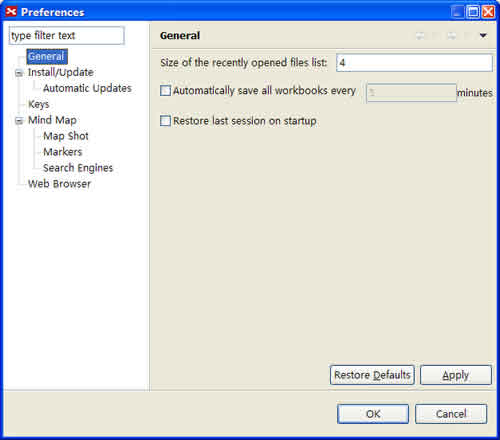
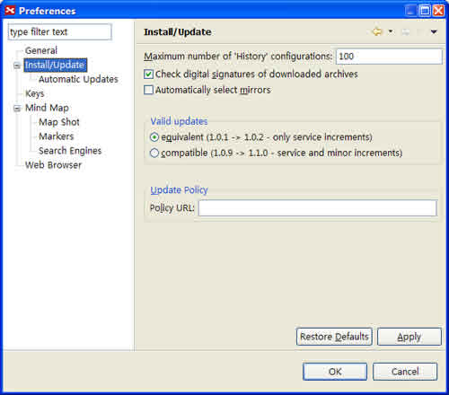
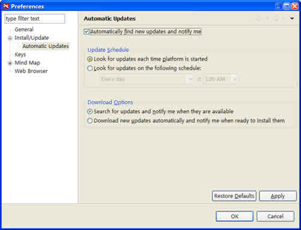
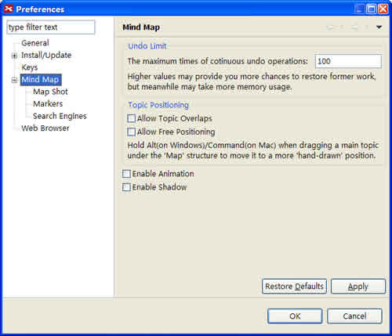
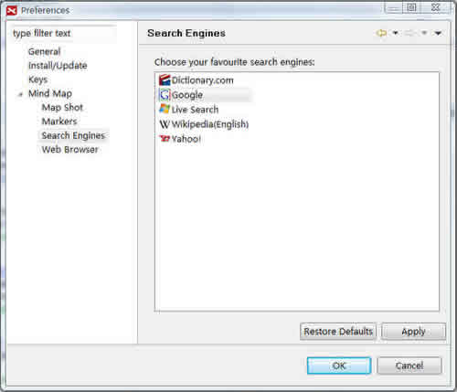
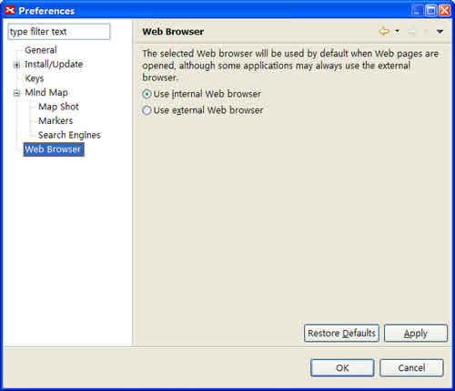
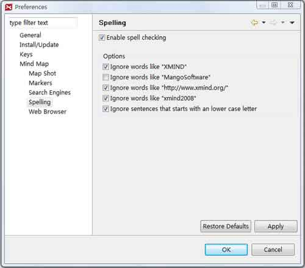
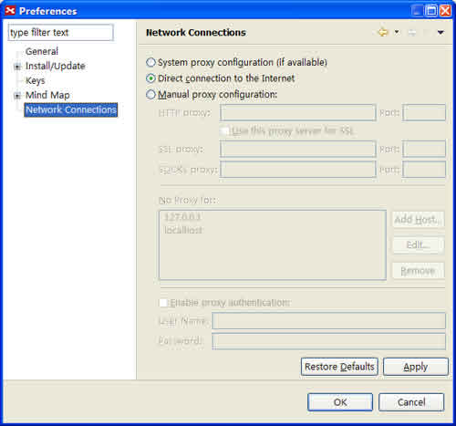

XMind Preference Dialog
- You can change general settings about XMind here.
 - You can change settings about Install/Update here.
 - You can change settings about Auto Updates here.
 - You can change shortcuts about XMind here.

- You can change general settings about Mind Map here.
 - You can set up Map Shot here.

- You can set up Markers here.

- You can set up Search Engines inside XMind here.
 - You can set up Web Browser here.
 - You can change the settings about Spell checker here.
 - You can change the settings about Proxy server here.
